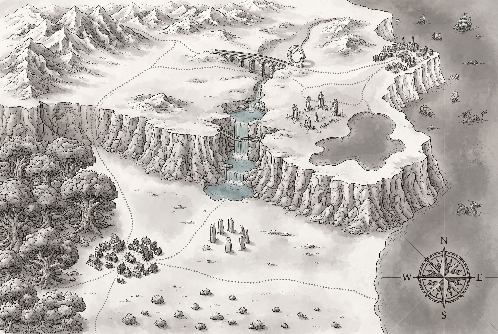

Da Vila dos Heróis a Maré-Alta há dez lugares espalhados por várias rotas. Uma grande escarpa corta a terra de leste a oeste — e a única subida é a garganta das Cataratas.

Passe o mouse sobre um marcador para ver a descrição — clique para abrir a imagem do local.
Arraste os marcadores para a posição certa, depois use Copiar posições e cole no chat para eu atualizar o mapa.
A Estrada para Maré-Alta
Como ler o mapa
Os números dos marcadores são os mesmos das imagens abaixo. Só a garganta das Cataratas (12, 10, 13, 11, 9) é passagem obrigatória para o norte. Antes da escarpa: estrada do oeste (4 Bosque dos Gigantes) ou do leste (2 Campo dos Monólitos). Depois da subida: Rota da Serra, ao norte (17 Viaduto do Vale Rosa, 18 Anel dos Peregrinos), ou Rota do Vale e do Lago, ao sul (14 Deuses de Pedra, 26 Lago Espelho). As duas terminam em 29 Maré-Alta.